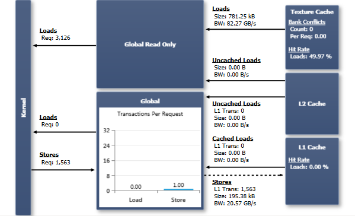

全局内存位于设备内存中，可通过两种不同的数据通路进行访问：从计算能力 2.x 及更高的设备开始，全局内存流量经数据缓存（L1 缓存和/或 L2 缓存）路由。在计算能力 3.5 的设备上独有的另一选项是：只读全局内存访问可以通过纹理缓存来进行——使用标准指针即可，无需事先绑定纹理，也不受标准纹理的尺寸限制。
无论使用哪条数据通路，编译器都允许控制沿途各缓存的行为。通过 -dlcm 编译标志，可以在编译时配置全局内存访问是缓存在该数据通路上所有可用的缓存中（-Xptxas -dlcm=ca，这是默认设置），还是仅缓存在 L2 中（-Xptxas -dlcm=cg）。编译器设置提供按编译模块的全局控制，而内联 PTX 汇编则可对每条内存指令进行显式控制（参见 PTX ISA 定义中的 Cache Operators 章节）。在本实验的输出中，所使用的缓存行为差异以 Cached Loads（带缓存的加载）和 Uncached Loads（不带缓存的加载）来标识。前者先经过 L1 缓存或纹理缓存（取决于数据通路），再经过 L2 缓存；后者仅经过 L2 缓存。
L1 缓存行为 128 字节，对应设备内存中一个 128 字节对齐的段。同时缓存在 L1 和 L2 中的内存访问（通用数据通路上的带缓存加载）以 128 字节的内存事务提供服务，而仅缓存在 L2 中的内存访问（通用数据通路上的不带缓存加载）以 32 字节的内存事务提供服务。因此，仅缓存到 L2 可以减少过度获取（over-fetch），例如在分散访问的情况下。
图表
全局只读计算能力 3.5 的设备支持通过纹理流水线所使用的同一缓存来读取全局内存。由于纹理缓存的合并规则与数据缓存有很大不同，使用这条内存通路可能提升性能——对于高度非均匀的内存访问模式尤其如此。对于受数据缓存读写带宽限制的 kernel，将部分流量通过全局只读数据通路路由还能带来额外的性能收益，因为纹理缓存是一个独立的物理单元，具有独立的数据通路；但请注意，全局只读内存访问与所有通过纹理获取产生的流量共享纹理缓存。
如果目标是支持该特性的计算设备，编译器会在合适时自动使用全局只读数据访问。为符合全局只读访问条件的内存指针添加 对于不支持全局只读数据通路的设备，图表的上半部分会显示为灰色。 全局内存
当一个 warp 执行访问通用全局内存的指令（ 每请求事务数（Transactions Per Request）图表显示每条已执行的全局内存指令平均所需的 L1 事务数，分别针对加载和存储操作。数值越低越好；对于一个满 warp 的单次内存操作，目标值为：4 字节访问 1 个事务，8 字节访问 2 个事务，16 字节访问 4 个事务。实际所需事务数取决于该次内存操作的访问模式，也取决于目标设备的计算能力。CUDA C Programming Guide 对每种计算架构的合并规则给出了详细信息（计算能力 2.x、计算能力 3.x）。 |
const __restrict__ 类型修饰符，或考虑对这些内存操作使用 __ldg() 内置函数。源代码视图页面有助于定位并核实具体的内存指令。
NVIDIA GameWorks Documentation Rev. 1.0.150630 ©2015. NVIDIA Corporation. All Rights Reserved.